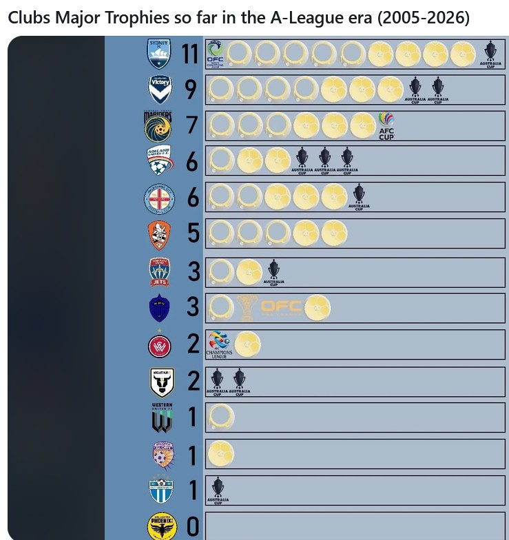
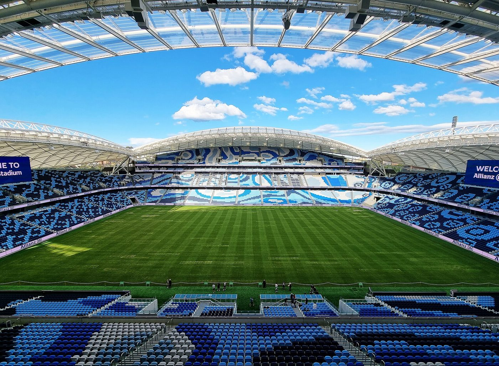

Tomorrow night, the A-League Men season begins with a Sydney Derby at Allianz Stadium, and a capacity crowd is expected. We gave you the full derby-night guide in Issue 1, and there's a quick checklist at the end of this article. But first, a question worth asking before any big match: who are we, and what have we won?
The answer, it turns out, is: more than anybody else.

The graphic above counts the major trophies won by each club since the A-League began: Championships (won in the Grand Final), Premierships (for finishing top of the regular season), the Australia Cup, and continental titles in Asia and Oceania. Sydney FC sit proudly at the top, with more silverware than anybody else.
We checked every number against the official honours lists, and they're right with one exception, and it's a happy one. The graphic gives Sydney FC 11, with a single Australia Cup. In fact, Sydney have won the Australia Cup twice: in 2017, when it was still called the FFA Cup, beating Adelaide United 2–1 after extra time, and in 2023, beating Brisbane Roar 3–1 at Allianz Stadium. That makes our count 12.
The Sydney FC trophy cabinet
Five Championships is a record: no other club has won more than four Grand Finals. And the run between 2016 and 2020, when Sydney won three Championships, three Premierships and an FFA Cup in four seasons, is the closest thing the A-League has had to a dynasty. If you want to know what pedigree looks like in Australian football, this is it.
Major trophies in the A-League era: our count
The graphic uses badges instead of names. The dark-blue badge with three trophies belongs to Auckland FC, who only started in 2024 and have already won the Premiership (2024–25), the Championship (2025–26) and the brand-new OFC Professional League. The light-blue badge with one Australia Cup is South Melbourne, who won the cup this year on penalties against Melbourne Victory. And poor Wellington Phoenix are still waiting for their first.

Here's the thing about a trophy cabinet: the best bit is the empty space at the end of the shelf. Sydney haven't won the A-League itself since 2020, and last season ended in heartbreak, with a 1–0 defeat to Auckland FC in the Grand Final. New coach Patrick Kisnorbo has won trophies before, and the club's sporting director, Alexander Baumjohann, calls him "a proven winner". Tomorrow is the first step towards number 13. And you can be there for it.
Your derby ticket or membership includes free public transport to and from the match. The light rail (L2 or L3) to Moore Park is the easiest way in. Car parks will fill up fast.
Get there early. Watching the warm-up, and the stadium filling up around you, is half the fun of a derby.
Former Sydney coach Ufuk Talay will be in the Wanderers dugout. Expect the home crowd to let him know they've noticed.
Only people with valid tickets should go to the stadium. Check the Sydney FC website for anything left, and never buy from strangers online.
A scarf or jersey, something warm for an October night, and your loudest singing voice. The club's own advice: "Drink water, bring your friends."
The match is live on Channel 10 and Paramount+. Sit as close to the TV as you're allowed and pretend.
Same as last time, because we haven't changed our minds: Sydney FC 2–1 Wanderers. A record-breaking club deserves a winning start. Now go and make some noise.